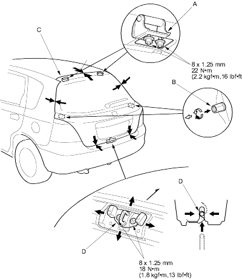

Tailgate
Adjustment
|
20-248 |
|
- Remove the support strut from each side (see page 20-249).
- Remove the quarter pillar trim from each side (see page 20-207) and pull down the rear portion of the headliner (see page 20-210). Take care not to bend the headliner excessively.
- Remove the rear trim panel (see page 20-208).
- Slightly loosen each bolt and nut.
- Adjust the tailgate alignment in the following sequence.
- Adjust the tailgate hinges (A) right and left, as well as forward and rearward, using the elongated holes.
- Turn the tailgate edge cushions (B), in or out as necessary, to make the tailgate (C), fit flush with the body at the side edges.
- Adjust the fit between the tailgate and tailgate opening by moving the striker (D).
